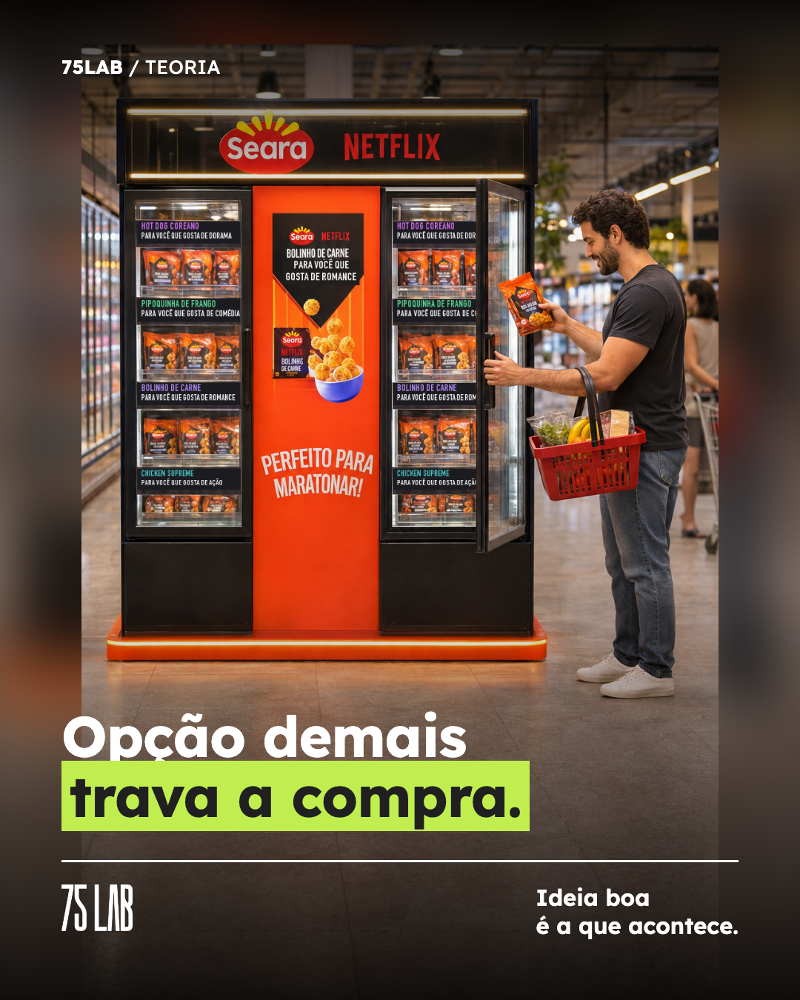
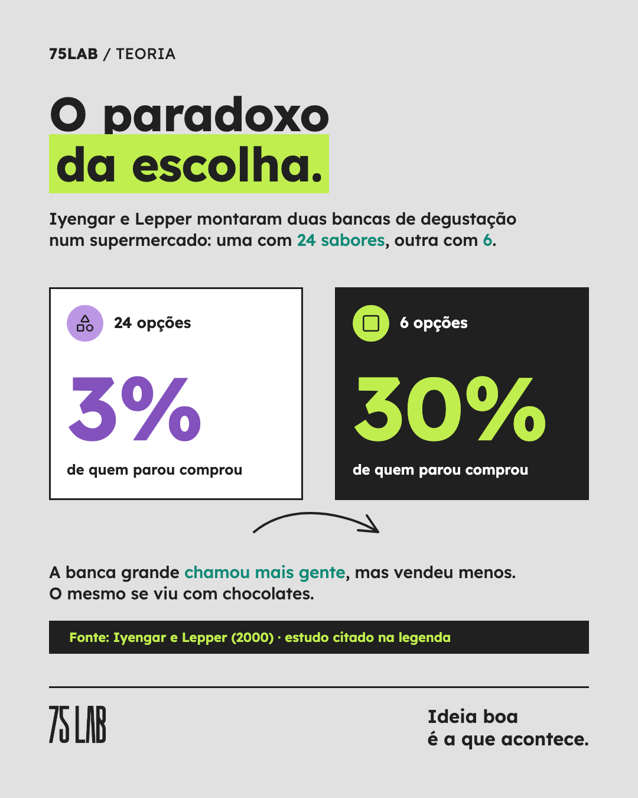
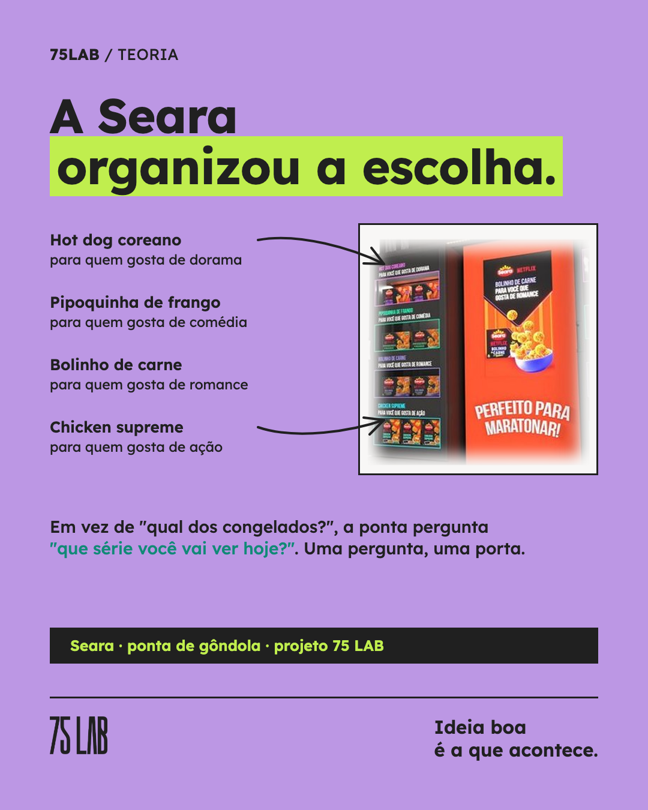
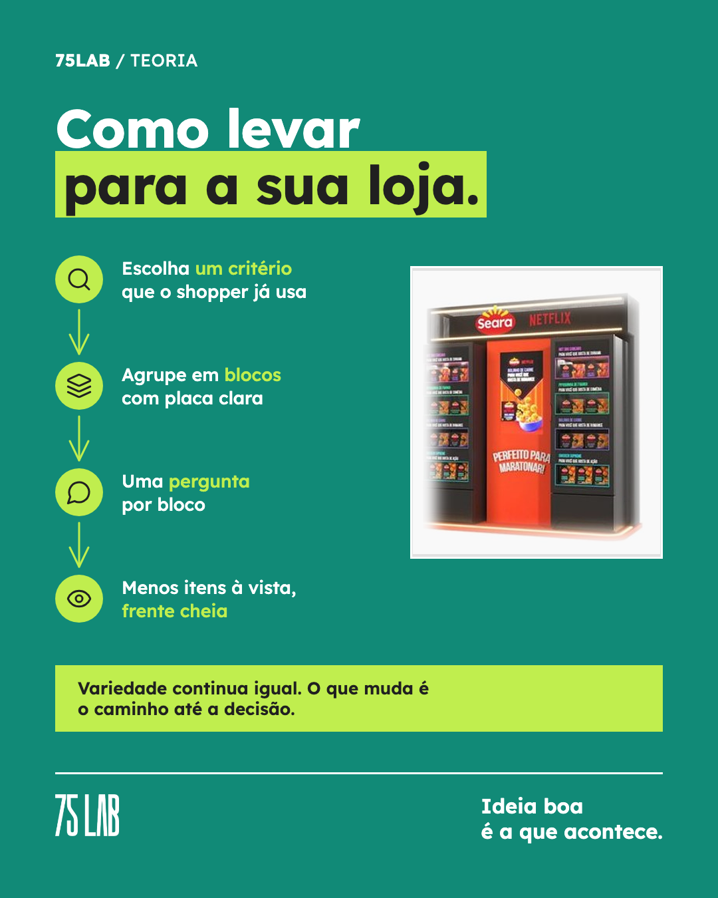
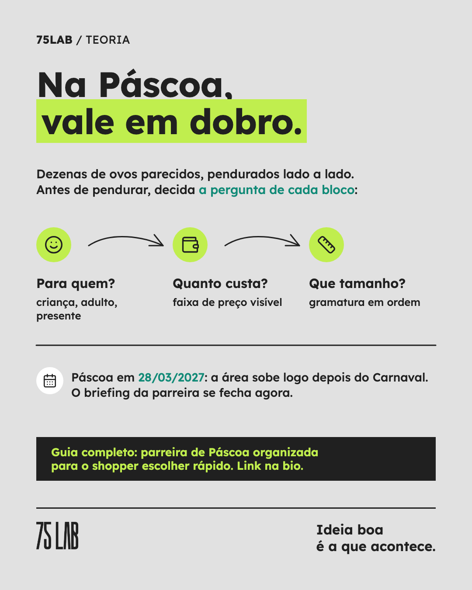
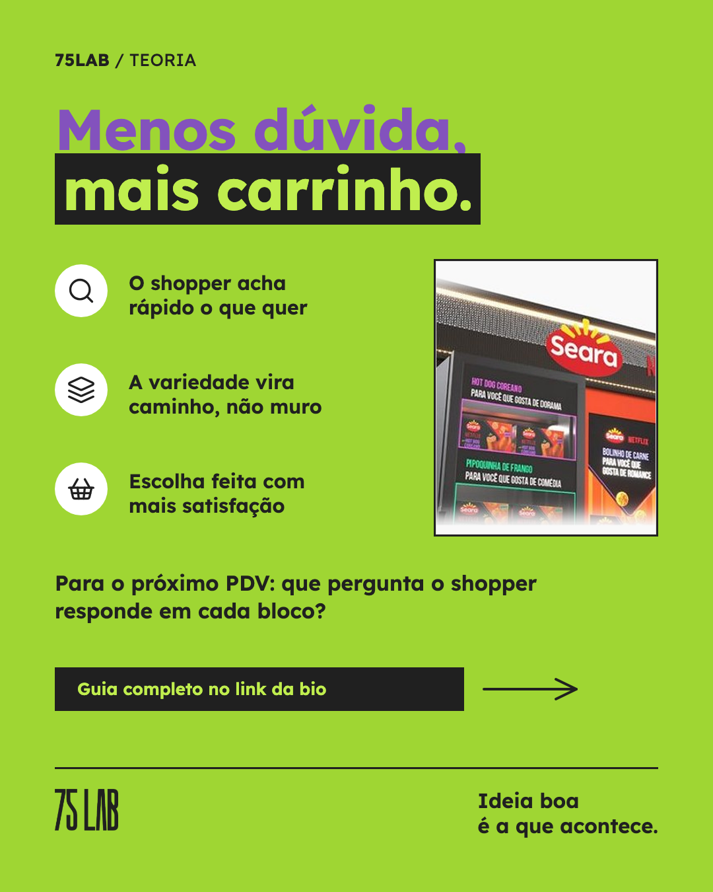
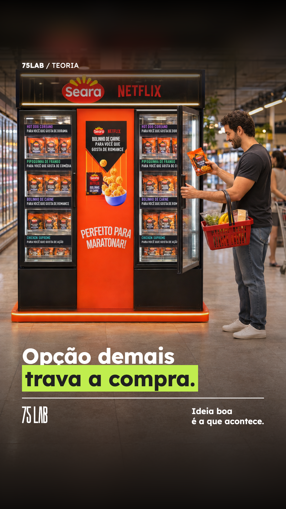
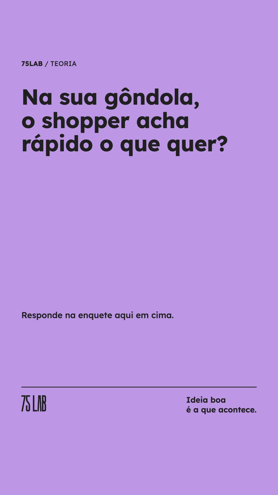
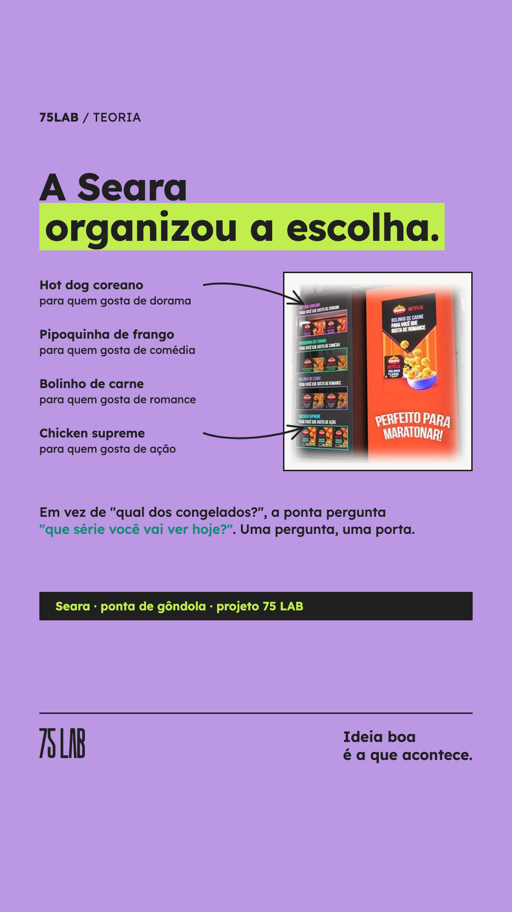
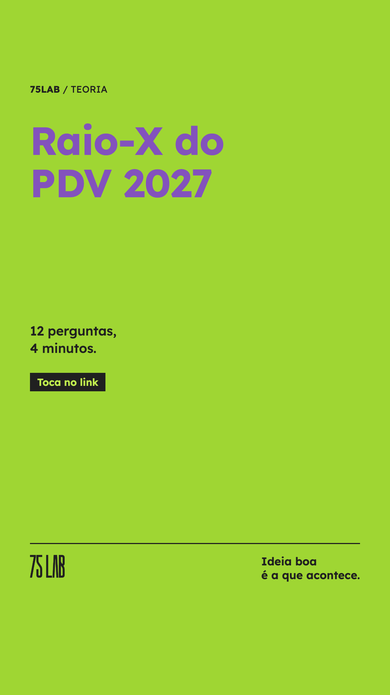

19/11 · teoria
Paradoxo da escolha: opção demais trava a compra (Iyengar e Lepper, 2000); ponta de gôndola Seara por gênero de série; guia da parreira de Páscoa
Quando as opções são muitas e parecidas, o shopper trava e compra menos (Iyengar e Lepper, 2000: 3% contra 30%). A saída não é cortar variedade, é organizar o caminho: um critério, blocos com placa e uma pergunta por bloco. A ponta de gôndola da Seara faz isso com gênero de série; a parreira de Páscoa precisa disso em dobro.
Toque em Aprovar, Pedir ajuste ou Não publicar em cada peça. Abre o GitHub com tudo preenchido: é só tocar em Submit new issue. No ajuste, escreva o que mudar. A rotina lê sua resposta na rodada seguinte (10h35, 12h35, 14h35 e 16h35) e o selo da peça muda aqui.
19/11 · sai a partir de 12:30
Instagram · carrossel












Legenda
Opção demais trava a compra. E a ciência tem nome para isso: paradoxo da escolha. Num experimento clássico, Sheena Iyengar e Mark Lepper montaram duas bancas de degustação num supermercado. A de 24 sabores chamou mais gente, mas só 3% de quem parou comprou. Na de 6 sabores, 30% compraram. O mesmo apareceu num teste com chocolates (Journal of Personality and Social Psychology, 2000). Como levar para a gôndola: 1. Escolha um critério que o shopper já usa para decidir. 2. Agrupe os produtos em blocos com placa clara. 3. Faça uma pergunta por bloco. 4. Menos itens à vista, frente sempre cheia. Na ponta de gôndola que a 75 LAB fez para a Seara, cada porta responde a uma pergunta simples: que série você vai ver hoje? Hot dog coreano para dorama, pipoquinha de frango para comédia, bolinho de carne para romance, chicken supreme para ação 🍿 Na parreira de Páscoa, vale em dobro. Guia completo no link da bio, e o Kit Páscoa 2027 grátis está lá também 📌 #trademarketing #pdv #shopper #merchandising #pascoa
carrossel 4:5
19/11 · sai a partir de 10:30
Texto da página da 75 LAB
Mais opção na gôndola nem sempre vende mais. No estudo clássico de Sheena Iyengar e Mark Lepper (Journal of Personality and Social Psychology, 2000), uma banca de degustação com 24 sabores atraiu mais gente do que uma com 6. Mas só 3% de quem parou na banca grande comprou, contra 30% na pequena. O efeito se repetiu num teste com chocolates. Estudos posteriores mostram que ele pesa mais quando as opções são parecidas e difíceis de comparar, que é exatamente o caso de muita categoria no PDV. A saída não é cortar variedade. É organizar o caminho até a decisão: 1. Um critério que o shopper já usa. 2. Blocos com placa clara. 3. Uma pergunta por bloco. 4. Menos itens à vista e frente cheia. Na ponta de gôndola que a 75 LAB desenhou para a Seara, cada porta do freezer responde a uma pergunta simples: que série você vai ver hoje? Dorama, comédia, romance ou ação, cada uma com o seu produto. Na parreira de Páscoa, com dezenas de ovos parecidos lado a lado, a lógica vale em dobro. Escrevemos o guia: https://75lab.com.br/guia-parreira-de-pascoa.html?utm_source=linkedin&utm_medium=post E o Kit Páscoa 2027, com cronograma e briefing da parreira, é grátis: https://75lab.com.br/kit-pascoa-2027.html?utm_source=linkedin&utm_medium=post&utm_campaign=kit-pascoa #trademarketing #pdv #shopper
Texto do seu perfil
Quanto mais opção na gôndola, melhor? Nem sempre. Tem um estudo que eu sempre volto: Iyengar e Lepper, 2000. Duas bancas de degustação no mesmo supermercado. A de 24 sabores atraiu mais gente, mas só 3% compraram. A de 6 sabores converteu 30%. No PDV, eu leio assim: o shopper não precisa de menos produto, precisa de menos dúvida. Foi o que a gente fez na ponta de gôndola da Seara. Em vez de uma parede de congelados, cada porta do freezer responde a uma pergunta: que série você vai ver hoje? Dorama, comédia, romance ou ação. Uma pergunta, uma porta. Agora vem a Páscoa, e a parreira é o lugar onde isso mais pesa. Dezenas de ovos parecidos pendurados lado a lado. Antes de pendurar, vale decidir qual pergunta cada bloco responde: para quem, quanto custa, que tamanho. Escrevi um guia sobre isso: https://75lab.com.br/guia-parreira-de-pascoa.html?utm_source=linkedin&utm_medium=post E o Kit Páscoa 2027 está aqui, grátis: https://75lab.com.br/kit-pascoa-2027.html?utm_source=linkedin&utm_medium=post&utm_campaign=kit-pascoa #trademarketing #pdv #varejo
página da 75 LAB
19/11 · sai a partir de 14:30
Reels
Legenda
Opção demais trava a compra: o paradoxo da escolha no PDV, com a ponta de gôndola da Seara e a parreira de Páscoa. Guia completo no link da bio. #trademarketing #pdv #shopper #pascoa
Roteiro
3.0 s · 4.6 s · 4.6 s · 4.4 s · 4.4 s · 3.8 s · 3.4 s · Menos dúvida, mais carrinho. Guia completo no link da bio
reels com capa
19/11 · sai a partir de 12:30
Stories








Indicação
Tela 1: sem sticker Tela 2: Enquete no meio da tela: "Acha rápido" / "Se perde" Tela 3: sem sticker Tela 4: Link para https://75lab.com.br/raio-x-pdv.html?utm_source=instagram&utm_medium=stories Vídeo com locução (stories-video): Opção demais trava a compra. A ciência chama isso de paradoxo da escolha. / Com vinte e quatro sabores, só três por cento compraram. Com seis sabores, trinta por cento. / Na ponta de gôndola da Seara, cada porta responde a uma pergunta: que série você vai ver hoje? / Na parreira de Páscoa vale em dobro: para quem, quanto custa e que tamanho. / E agora, uma ajuda: responde o Raio-X do PDV dois mil e vinte e sete. São doze perguntas, uns quatro minutos. O link está aqui.
enviado ao celular
Fontes
- Iyengar, S. S. e Lepper, M. R. (2000). When choice is demotivating. Journal of Personality and Social Psychology, 79(6), 995-1006
- Scheibehenne, Greifeneder e Todd (2010). Can there ever be too many options? Meta-análise, Journal of Consumer Research
- Case Seara, ponta de gôndola, 75lab.com.br/cases.html
- Kit Páscoa 2027 (Páscoa em 28/03/2027)